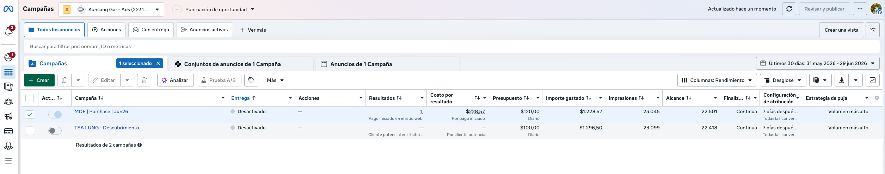

Pagos conectados
El sitio ya puede generar preferencias de pago, enviar al checkout de Mercado Pago y recibir respuestas de aprobación, rechazo o pendiente.
Reporte de avance
La primera etapa dejó una estructura funcional para recibir pagos, registrar órdenes y validar la demanda real de eventos. Esta base puede convertirse en el punto de partida de la plataforma integral planeada para Kunsang Gar México.
Resumen ejecutivo
El sitio ya puede generar preferencias de pago, enviar al checkout de Mercado Pago y recibir respuestas de aprobación, rechazo o pendiente.
Cada orden se guarda con referencia externa, datos de comprador, evento, monto y estado de pago para dar seguimiento administrativo.
La implementación ya registró una compra real, confirmando que el camino campaña, sitio, pago y registro puede operar en producción.
La misma arquitectura puede escalar hacia eventos, comunidad, donativos, biblioteca privada, enseñanzas y administración.
Meta Ads · 31 mayo al 29 junio 2026
La cuenta muestra campañas activas durante el periodo, inversión en pauta, alcance, impresiones y un evento de pago iniciado para Mil Ofrendas. Esto confirma que la infraestructura ya recibió tráfico calificado y señales de conversión.

Ver captura completaSiguiente etapa
Pagos, referencias, estados y comprador ya tienen una base técnica funcional.
Vista privada para revisar órdenes, asistentes, pagos y campañas por evento.
Eventos, donativos, comunidad, biblioteca privada, enseñanzas y comunicación interna.